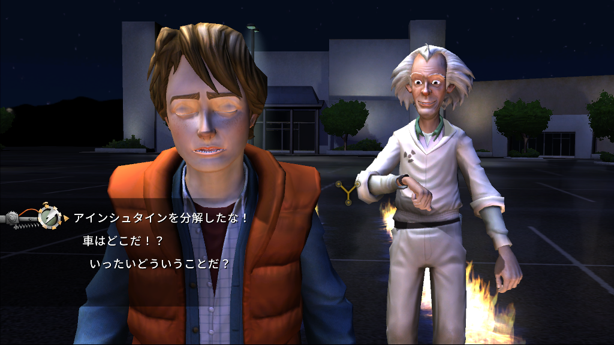
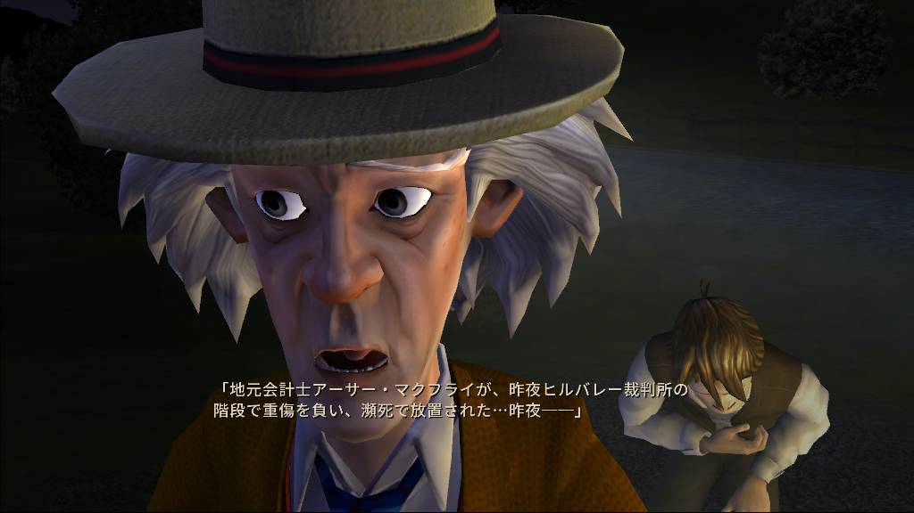
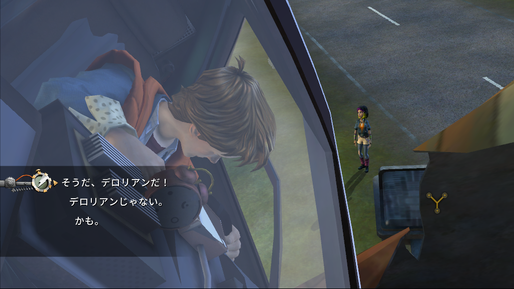
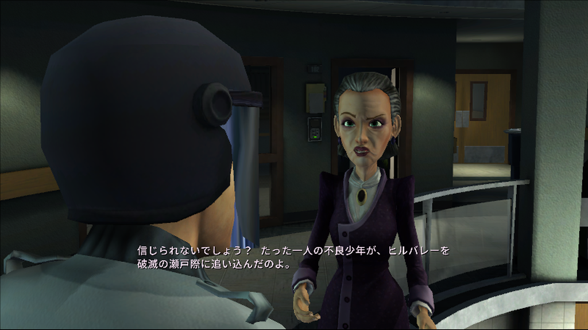
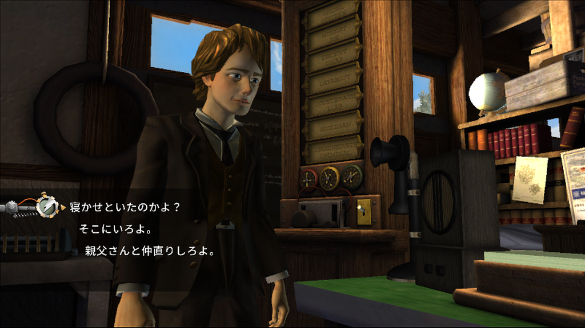

ご意見・誤訳の報告
誤訳や不自然な訳に気づいたら、GitHub の Issues で教えてください。
テルテール・ゲームズの「Back to the Future: The Game」を日本語で遊べるようにする、非公式のファンメイド日本語化プロジェクトです。 全 5 エピソードのうち、エピソード1から順に日本語化しています（エピソード3まで公開中）。 パッチはゲームのフォルダに DLL をひとつ置くだけで日本語になり、消せば英語に戻ります。





誤訳や不自然な訳に気づいたら、GitHub の Issues で教えてください。